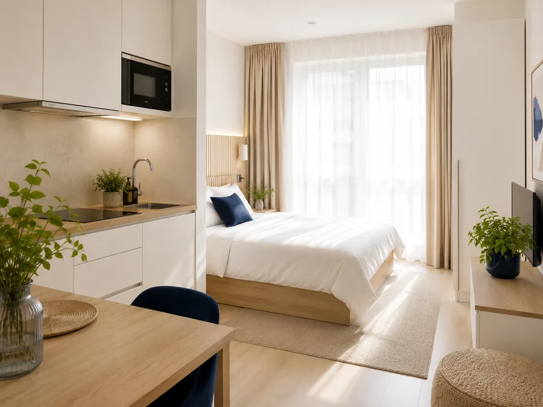
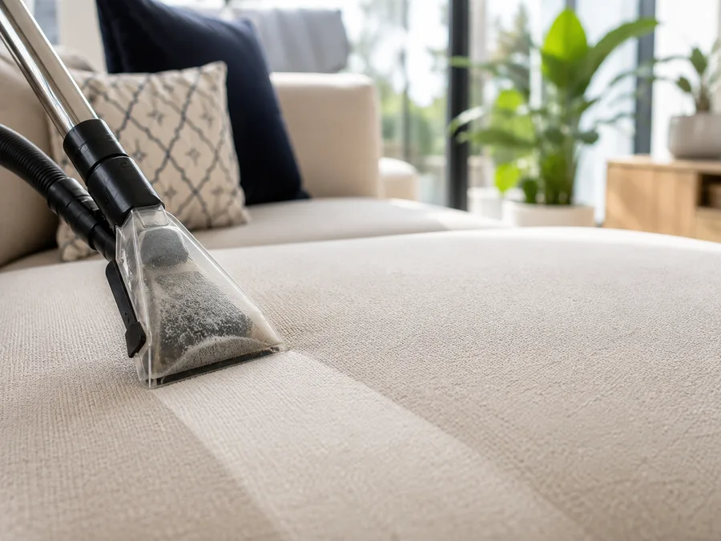
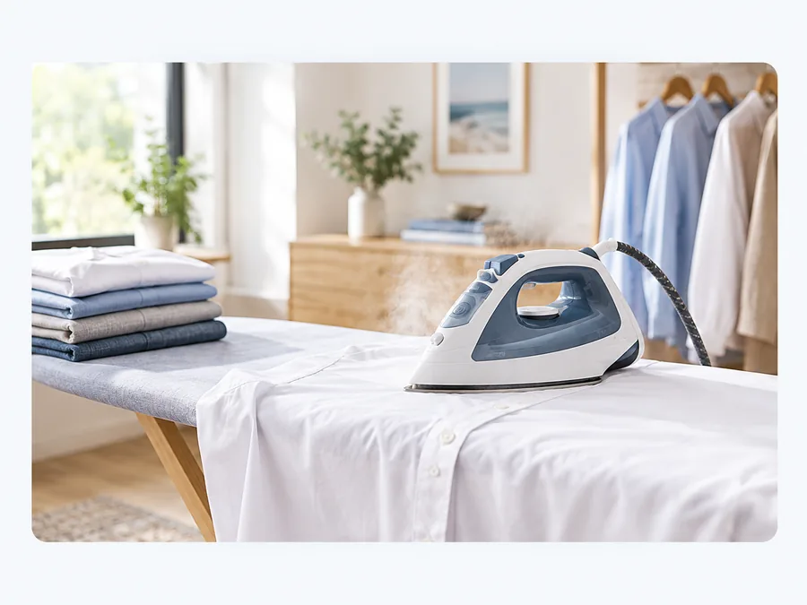

Upratovanie v Bratislave 3 hodiny za 79,90 €Kúpite si hodiny — a čomu sa budeme venovať, poviete vy.
Prídeme s vlastnými prostriedkami, poviete nám priority a my ich odrobíme. Bez obhliadky, cena je známa vopred.
5,0 30 recenzií na Google Pozrieť →Koľko hodín potrebujete?
Cena je konečná. Prostriedky, umytie okien aj doprava sú v nej.
3hodiny Mini 79,90 € 4hodiny Komfort 99,90 € 6hodín Klasik 139,90 € 8hodín Maxi 169,90 € 8hodín Maxi + tepovanie 199,90 €„Žiadne zdĺhavé objednávanie ani zbytočné obhliadky vopred — jednoducho prišli, upratali a výsledok bol perfektný. Stala som sa ich pravidelnou zákazníčkou a firmu som odporučila aj u nás v práci."Soňa M.
„Hľadala som spoľahlivú upratovaciu firmu a toto bola trefa do čierneho. Pani upratovačka odviedla neskutočne skvelú prácu — dala si záležať aj na detailoch. Je skvelý pocit vrátiť sa do dokonale čistého domova."Alexandra A.
„S upratovaním som bol veľmi spokojný. Všetko bolo urobené precízne, dôkladne a podľa mojich predstáv. Oceňujem profesionálny prístup, príjemné vystupovanie a dôraz na detaily."Dan A.
„Pomer cena a kvalita výborná. Poctivé umývanie a upratovanie, bola som veľmi spokojná."Natália F.
„Profesionálny prístup, rýchla komunikácia a kvalitne odvedená práca."Marek R.
Štyri veci, na ktoré sa ľudia pýtajú najviac
Platíte za hodiny, nie za metre

Upratovanie Byt alebo dom, 3 až 8 hodín od 79,90 €
Tepovanie Sedačky, koberce a matrace 55 € / hod
Žehlenie Košele, bielizeň aj uteráky 49,90 € Poukážky Viac upratovaní za lepšiu cenu od 73,98 €V cene každého balíka je presne to, čo si poviete, ako aj umytie okien, dezinfekcia kúpeľne a WC, prach, podlahy aj balkón, čistiace prostriedky a doprava — chodíme do všetkých bratislavských mestských častí.
- Ošetrenie koženej sedačky 25 €
- Tepovanie ku ktorémukoľvek balíku za zvýhodnenú cenu
Zľava −15 % pre dôchodcov a držiteľov preukazu ZŤP — pri rezervácii zadajte kód SOLIDARITA15, pri prvej návšteve nám stačí ukázať preukaz. Platí na cenu služby, nie na príplatky, a nevzťahuje sa na postavebné upratovanie.
Čo presne je v ktorom balíku a celý rozpis cien nájdete v prehľade služieb a cien.
Od rezervácie po Poriado(k) za tri kroky
- Vyberiete balík a termínOnline, bez obhliadky. Potvrdenie máte okamžite.
- Poviete nám priorityČo je najdôležitejšie upratať — tomu sa venujeme najviac.
- Prídeme a upracemeS vlastnými čistiacimi prostriedkami a vybavením.
Upratujeme v Bratislave, nie cez agentúru
Upratovaniu sa venujeme profesionálne už roky — u náročných klientov, v domácnostiach aj vo veľkých priestoroch. Za ten čas sme pochopili, čo robí upratovanie naozaj dobrým: nie odškrtaný zoznam, ale priestor, v ktorom sa cítite ako doma.
Preto sme sa rozhodli robiť to po svojom. Založili sme Poriado a všetky nazbierané skúsenosti sme vložili do služby, ktorá dáva zmysel vám — nie tabuľke. Prídeme s vlastným vybavením, dohodneme sa na prioritách a odvedieme prácu tak, akoby sme upratovali u seba doma.
Sme malý osobný tím, ktorý si zakladá na férovosti — bez skrytých poplatkov a bez výhovoriek. Čo si dohodneme, dodržíme, a k vášmu domovu pristupujeme spoľahlivo a diskrétne.